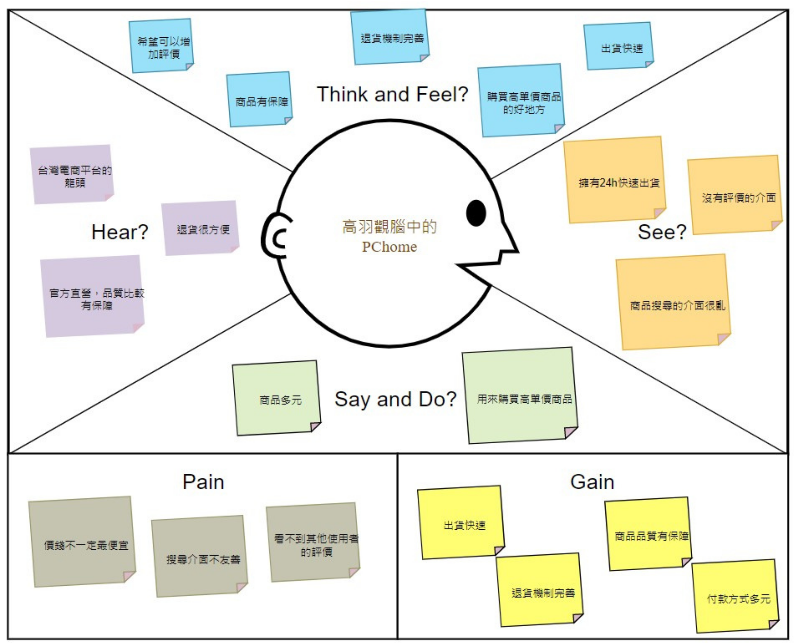
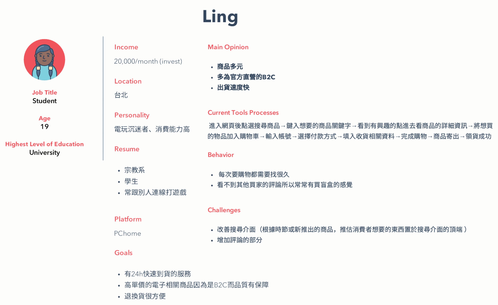
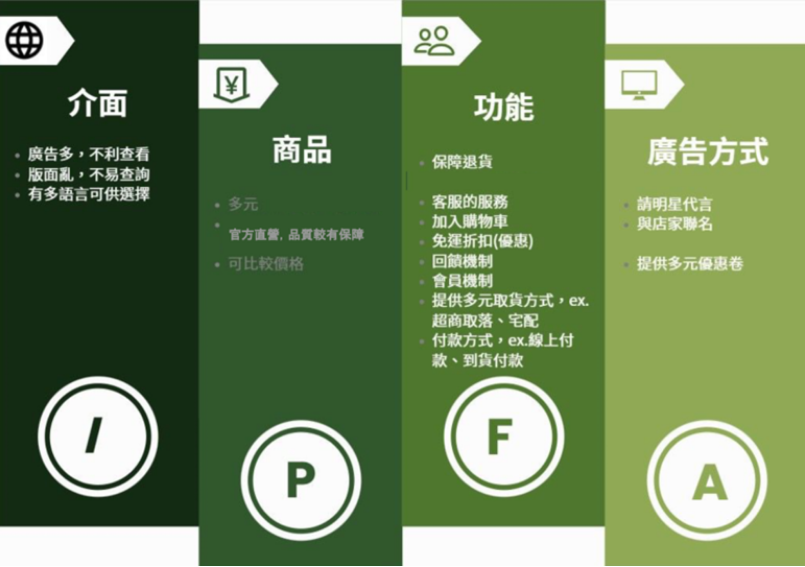
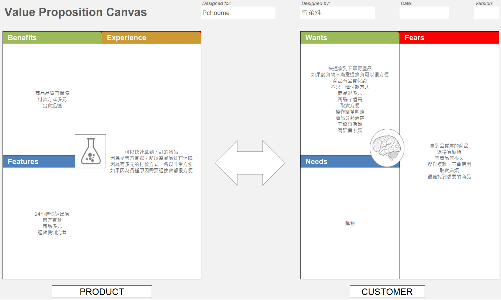
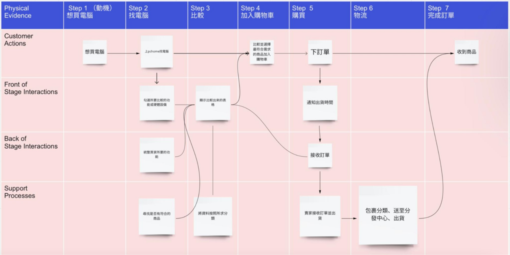
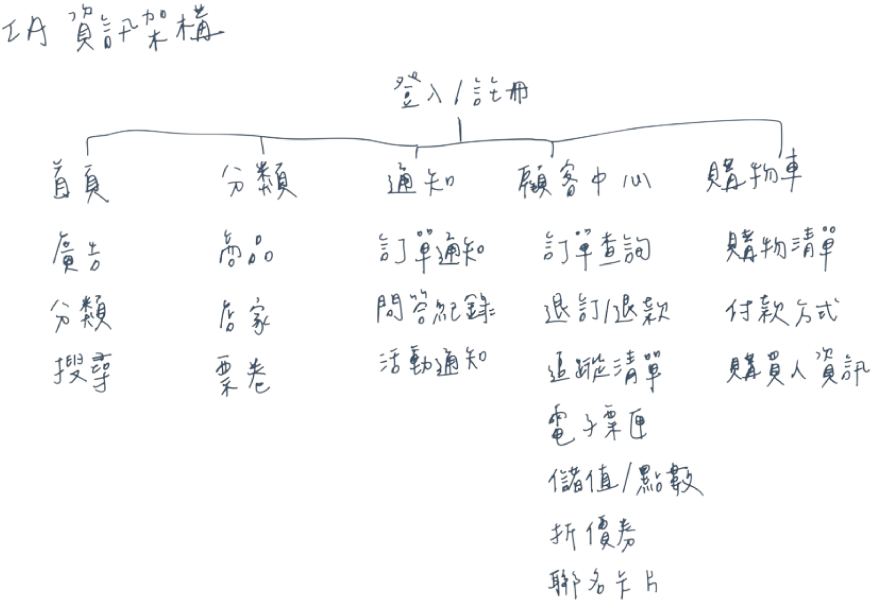
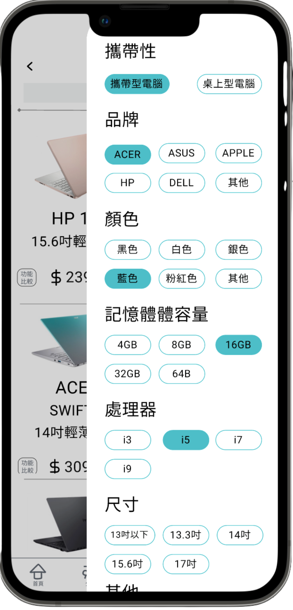
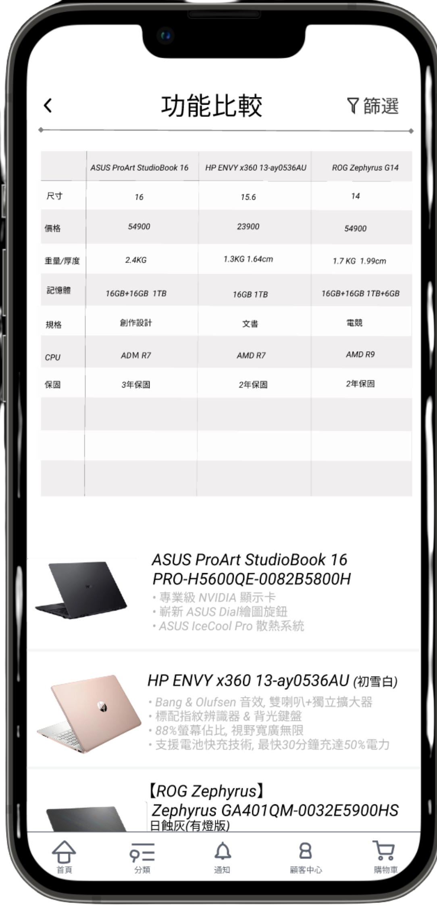
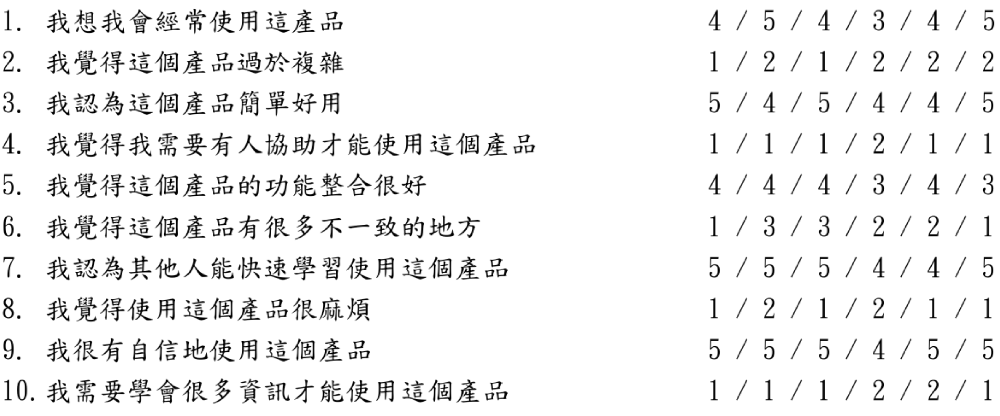

電商平台介面優化 Innovation and Design Thinking
以服務流程與使用情境為核心，針對電商平台的比較與篩選功能重新設計介面，情境一任務完成率達 97%，資訊可讀性顯著改善。

Project Snapshot
| Role | Team | Project Duration | Tools | System Scope |
|---|---|---|---|---|
| UX Designer / Usability Researcher | 5 人（系上作業） | 2021.09 – 2022.01 | 服務設計、Miro、Figma | 單一商品頁面、顧客中心、購物車功能、訂單通知 |
Context
Project Background
學期初團隊討論多個電商平台後，選擇針對 PChome 進行創新設計。PChome 雖是台灣知名度與商譽數一數二的電商平台，但介面資訊量大且分類不清，每次打開都讓人覺得眼花撩亂。我們認為聚集廣告版位、用圖示標示分類，能大幅簡化介面的複雜度；同時考量使用者在選購電子產品時，常因不熟悉規格或記不住每台候選商品的差異而難以決策，因此決定設計一套比較與篩選介面，讓使用者能依細項規格篩選，或選取喜歡的商品進行綜合比較。
Target Users
常使用電商平台網購的消費者。
Project Goals
- 簡化介面、將廣告分類整理，提升整體使用的方便度
- 透過篩選功能讓顧客更快速找到心目中的商品，減少選擇困難
Research & Insights
Research Methods
- 同理心地圖

受訪者對 PChome 的既有印象是台灣電商龍頭、退貨機制完善且為官方直營，購買過程感到安心、出貨快速。但他也認為 PChome 缺少評價功能、介面偏雜亂，整體評價是商品多元但較適合購買高單價商品。統整來看，PChome 的弱點在於價格未必最低、搜尋介面不友善、看不到其他使用者評價；優點則是出貨快速、退貨機制完善、商品品質有保障、付款方式多元。
- Persona

受訪者是一位常和朋友一起打遊戲的學生，因每月生活費較高、消費能力略高於一般人，加上愛打遊戲，經常使用 PChome。他喜歡 PChome 24 小時快速到貨與完善的退貨機制（B2C 模式），即使價格略高，品質與應急速度仍讓他持續選擇 PChome。他認為的缺點是商品分類不便、每次選購都要花很久時間，且沒有買家評論功能可以參考。他希望 PChome 能改善搜尋介面並增加評論機制。
Key Findings / Main Problems

- PChome 的介面雖支援多語言瀏覽，但分類不易、廣告過多、頁面複雜凌亂，使用起來不方便也不舒服
- PChome 商品多元且為官方直營，品質有一定保障，價格也可比較，讓顧客感到安心
- PChome 功能齊全，除了購物車，還有免運折價券、會員福利、多元取貨與付款方式，以及完整客服與退貨機制
- PChome 的廣告方式多元，除了優惠券，也會與店家聯名並邀請明星代言
Key Insights

從價值主張圖整理出六個面向：Benefits（出貨快速、取貨選項多、優惠券、會員制度、付款多元、品質優良）、Features（24 小時到貨、品牌合作、官方直營、退貨機制完善、線上活動）、Experience（官方直營降低買到假貨的疑慮、退貨完善、支付方式多元、客服容易聯絡）、Wants（比較功能、高 CP 值商品、評價系統、簡單操作介面）、Needs（更清楚的商品分類、以直播或影片說明商品內容）、Fears（實體與網站展示不符、操作複雜）。
Design Opportunities
電商平台缺少評價功能，顧客無法得知其他使用者的實際使用經驗，只能單方面聽取官方說詞。增加評價機制，能讓顧客更了解商品，降低買錯東西的機率。
How This Influenced the Design
Persona 與同理心地圖都指出「分類複雜、找不到想要的商品」是最主要的痛點，價值主張圖也顯示使用者渴望有「比較功能」。這讓我們把設計重心放在兩件事上：用更細的篩選條件縮小商品範圍，以及讓使用者能勾選多項商品直接比較規格，取代原本得自己記憶、來回切換頁面比對的方式。
Design Process
Service Blueprint

使用者搜尋商品後，勾選需要的性能與規格，系統顯示比較表格，使用者可將最符合需求的商品加入購物車並下單；賣家接收訂單後依包裹分類出貨，系統同步通知使用者出貨進度。勾選功能的目的是統整買家需求，並依需求分類呈現更完整的比較資訊。
Information Architecture

Prototype
Key Design Decisions
- 用圖示化的分類取代純文字選單，降低瀏覽大量商品時的認知負擔
- 篩選條件常駐在畫面右上角，讓使用者在瀏覽商品列表時可以隨時縮小範圍
- 比較表格採用可縮放設計，避免在手機版面因欄位過多而字體過小、難以閱讀
Solution
Final Solution
完成一套針對電商平台比較與篩選功能重新設計的介面原型：使用者可透過右上角的篩選條件縮小商品範圍，並將多項商品加入比較表格，一次檢視規格、圖片與特色，取代原本需要來回切換頁面比對的方式。
Main Features
- 依細項規格篩選商品的篩選介面
- 多項商品並列比較的規格比較表
- 可縮放的比較表格，兼顧手機版面的可讀性
Key Screens
- 篩選

在小分類搜尋到的商品列表中，使用者可透過右上角的篩選功能，選擇想要的規格，快速找到目標商品。
- 功能比較

選擇欲比較的商品後，會出現整體規格比較總覽，包含已選取的各項品項與功能；下方則顯示商品圖片、名稱與特色（比較表格在手機版面可放大檢視，避免字體過小影響閱讀）。
Design Rationale
比較表格與篩選功能都直接對應研究階段發現的核心痛點——「分類複雜」與「無法一次比較多項商品」，因此設計上優先確保這兩個功能在小螢幕上也維持好用，而非只做視覺上的簡化。
Impact
Testing Approach
邀請 6 位不同年齡層的受測者（15、20、22、40、45、50 歲）進行任務測試，設計兩個情境：
情境一：急需購買一台筆電，任務要求受測者依「處理器 i5 以上、輕薄、13 吋以上、預算三萬以下」的條件，從首頁進入商品頁、用篩選與比較功能選出符合需求的商品並加入購物車結帳。6 位受測者的任務完成率為 100%、100%、95%、90%、95%、100%（平均約 97%），完成時間介於 1 分 23 秒至 3 分 41 秒。主要錯誤是不熟悉「功能比較」的定義，以及部分受測者一開始沒想到可用篩選功能，因此花費較多時間逐一查詢商品資訊。
情境二：辦理退貨並聯繫客服，任務要求受測者從首頁的功能欄找到顧客中心，辦理訂單退貨並使用客服功能詢問相關資訊。6 位受測者的任務完成率為 80%、85%、85%、80%、80%、85%（平均約 82.5%），完成時間介於 2 分 32 秒至 3 分 41 秒。主要問題是受測者不容易找到退貨入口，也不確定顧客中心藏在功能欄裡。
User Feedback

- 介面下方常駐主要功能入口，操作方便，整體版面也讓人感覺舒服
- 原本因版面凌亂而少用 PChome 的受測者表示，新版介面清楚明瞭許多，願意更常使用
- 商品頁面較原版整齊，其他介面也不再顯得雜亂
- 較少網購經驗的受測者仍覺得操作可以更簡化，即使整體已比原本容易上手
- 跨年齡層受測者皆反映操作難度不高，和其他 App 相比算是十分簡易
Iteration Focus
- 優先將退貨與客服入口移到更顯眼、更容易被找到的位置
- 補強「功能比較」的操作提示，降低使用者對這個功能的陌生感
Results
情境一（購物比較與結帳）任務完成率達 97%，驗證篩選與比較功能確實能有效縮短商品比對的時間；情境二（退貨與客服）完成率約 82.5%，顯示售後服務動線仍是優化重點。
Future Improvements
- 將退換貨功能移至更容易發現的位置，例如首頁功能列的顯著位置
- 針對「功能比較」補上簡短的操作說明或提示，降低第一次使用的學習門檻
- 針對不同年齡層使用者的操作落差，補充更明確的視覺引導
Reflection
What Went Well
團隊順利將研究階段找到的痛點（分類複雜、缺乏比較功能）轉化為具體的篩選與比較介面，並透過 6 位跨年齡層受測者的任務測試，取得具體的完成率與時間數據，驗證設計方向確實改善了原本的使用體驗。
What I Would Do Differently
情境二（退貨與客服）的完成率明顯低於情境一，若能在原型階段就針對售後服務動線多做一輪迭代測試，會更有機會在正式評測前找出並修正這個落差。
Key Learnings
- 仔細觀察：從日常購物體驗中發現潛在痛點，培養以使用者為中心的思考習慣
- 使用者定義的重要性：不同年齡層的使用者有不同的操作習慣，需要明確定義目標族群的特性
- 數據化驗證：用任務完成率與完成時間量化易用性問題，比單純的主觀感受更有說服力
Skills Demonstrated
- 服務藍圖與資訊架構設計
- 易用性測試設計與執行，含任務完成率與 SUS 量表分析
- 同理心地圖、Persona、價值主張圖等使用者研究方法的整合運用